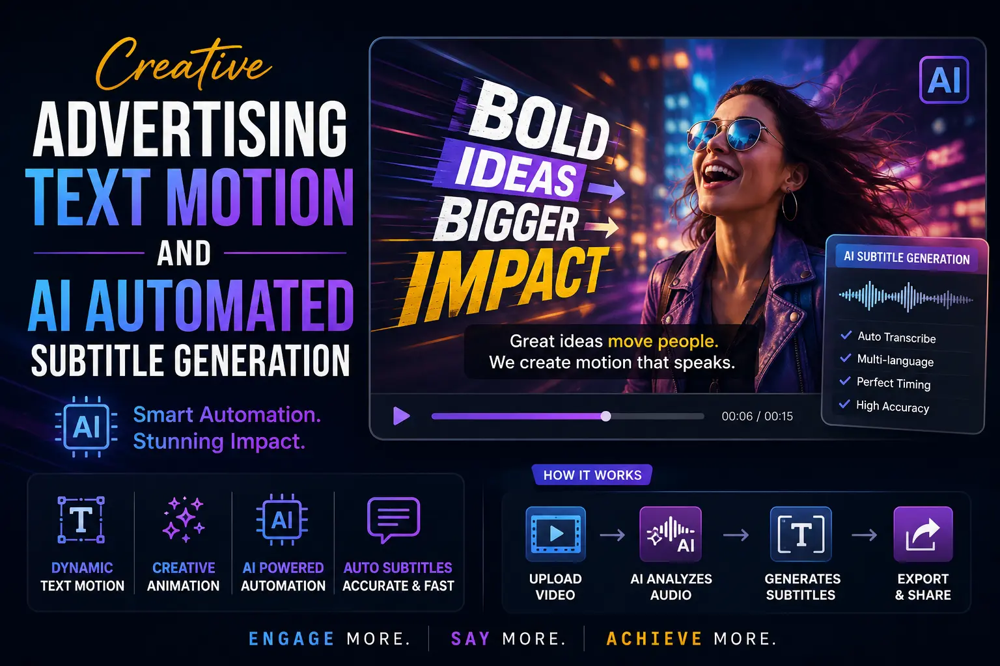
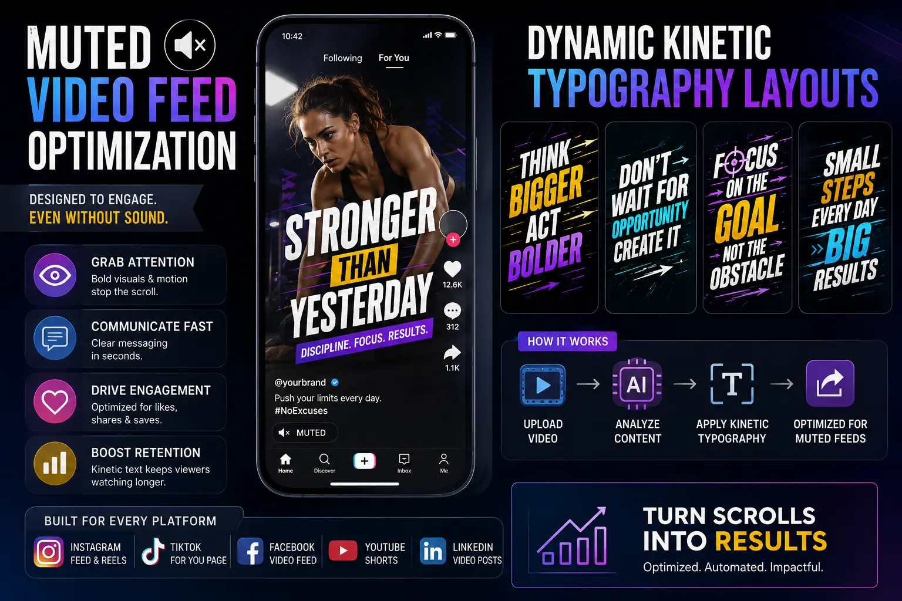

Harnessing AI Text Motion Tools to Retain Soundless Social Media Video Scrollers
The Muted Feed Challenge in Paid Social
In modern digital marketing, capturing user attention is a major hurdle. Over 80% of users watch short-form videos — such as Instagram Reels, TikToks, and YouTube Shorts — with their audio muted by default. If your video ad relies on voiceovers or soundtracks to deliver its core message, a muted viewer will swipe away in seconds. This makes visual storytelling critical to paid media campaign success.
To resolve this, marketers use **Creative Advertising Text Motion** to deliver information. By animating key terms and adding animated subtitles, creators create an engaging visual flow. This form of **Muted Video Feed Optimization** ensures that the ad remains effective and easy to follow, even without sound.
Automating this process is now simple with **AI Automated Subtitle Generation** tools. These tools transcribe speech, align text clips, and apply kinetic styling automatically, helping editors optimize their **social media pacing** and drive campaign retention.
Optimizing Soundless Video Delivery
Building high-retention short videos involves setting up structured kinetic text parameters:
- Dynamic Typography Layouts. Editors utilize **Dynamic kinetic typography layouts** to rotate, scale, and color-code words as they are spoken, keeping the visual flow engaging.
- Smart Caption Styling. Using **Instagram Reel caption styling tools**, editors design custom word blocks with bold borders and bright highlights, ensuring the text remains legible over busy backgrounds.
- Soundless Design Rules. Following strict **soundless ad design parameters** helps position text blocks within the middle third of the frame, avoiding overlap with platform UI buttons.
- Pacing Hacks. Editors apply **high-retention short video edit hacks** (such as cutting on sentence beats and adding zoom transitions) to maintain a fast, engaging visual rhythm.
Increased View Retention
Using **Creative Advertising Text Motion** keeps scrollers engaged longer on silent feeds, increasing the average watch time of your campaigns.
Fast Subtitle Setup
Using **AI Automated Subtitle Generation** processes allows editing teams to generate and style accurate captions in seconds, boosting post-production speed.
Platform-Optimised Text
Applying **Instagram Reel caption styling tools** guarantees that captions fit perfectly within safe zones, remaining fully visible across all placements.
Consistent Visual Rythm
Fine-tuning **social media pacing** ensures that text animation beats match the edit cuts, maintaining a clean visual rhythm.

The Soundless Ad Production Checklist
Producing high-performing muted ads requires specific layout and text configurations:
- Safe Zone Alignment. Keep all text elements within the central 1080×1080 area of a vertical video, preventing details from being obscured by user comments or icons.
- High-Contrast Color Palettes. Use bright text (such as yellow, neon green, or white) set against a dark semi-transparent backing box to keep readability high.
- Word Chunk Pacing. Limit displayed text to 3-5 words per screen. Large blocks of static text force the viewer to read rather than watch, increasing drop-off rates.
AI Subtitle Tools
- CapCut Pro for dynamic kinetic templates.
- Descript for automatic text-sync editing.
- Submagic for styled short-form captions.
- Premiere Pro Speech-to-Text tools.
Layout Parameters
- Central safe-zone positioning.
- Font selection: Bold sans-serif (e.g., Montserrat, Impact).
- Text sizing: 60-80px for mobile readability.
- Drop shadows or stroke borders (3-5px black).
Editing Software
- DaVinci Resolve for custom text transitions.
- Mobile-friendly **mobile video editing software** options.
- After Effects for advanced kinetic designs.
- Canva for quick social media templates.

Conclusion
To win on social media, ads must engage users visually before audio even plays. By using **Creative Advertising Text Motion** and **Muted Video Feed Optimization**, brands can communicate their messaging clearly to silent scrollers. Automating your subtitle workflow with **AI Automated Subtitle Generation** tools keeps post-production fast and efficient, helping you scale creative output.
At **The PhD Ads**, we optimize all social media video campaigns for muted environments. Our editing team utilizes **Instagram Reel caption styling tools** and **Dynamic kinetic typography layouts** to build high-retention short-form assets, maximizing ad performance across every platform.
Key Topics
Boost Your Video View Retention
At The PhD Ads, we use kinetic text motion, automated AI subtitles, and optimized safe-zone layouts to deliver engaging, soundless-optimized video assets.
Email: team@e2o.in